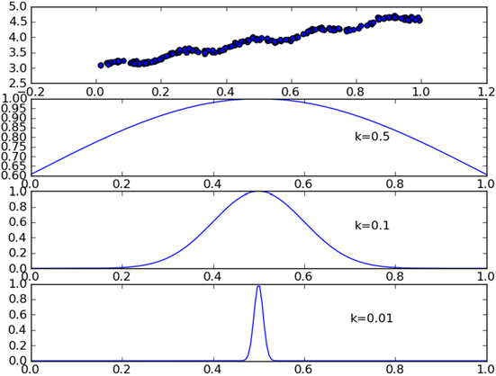
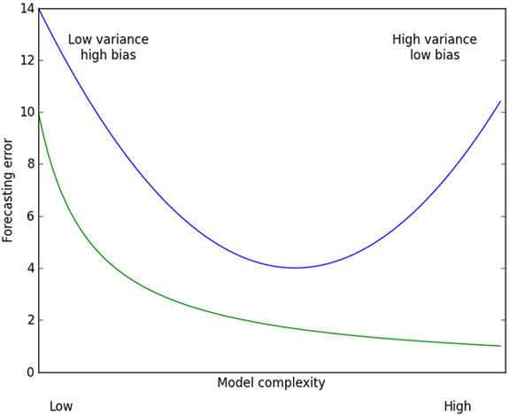

预测数值型数据：回归
分类的目标变量是标称型数据，而回归是对连续性数据做出预测。
用线性回归找到最佳拟合直线
线性回归
优点：结果易于理解，计算上不复杂
缺点：对非线性的数据拟合不好
适用数据类型：数值型和标称型数据
回归的目的是预测数值型的目标值。最直接的办法是依据输入写出一个目标值的计算公式。
Z = 0.1*X + 0.2*Y
这就是所谓的回归方程（regression equation）其中0.1和0.2称作回归系数（regression weights），求回归系数的过程就是回归。
回归的一般方法：
- 收集数据
- 准备数据：回归需要数值型数据，标称型数据将被转换成二进制数据
- 分析数据：绘出数据的可视化二维图将有助于对数据做出理解和分析，在采用缩减法求得新回归系数之后，可以将新拟合线绘制在图上作为对比
- 训练算法：找到回归系数
- 测试算法：适用$R^2$或者预测值和数据的拟合度，来分析模型的效果
- 使用算法：使用回归，可以在给定输入的时候预测出一个数值，这是对分类方法的提升，因为这样可以预测连续性数据而不仅仅是离散的类别标签
假如输入数据为矩阵$X$，回归系数为向量$w$，对于给定的数据$X_1$预测结果将会通过$Y_1=X^T_1w$得到。
找到$w$的方法是找到使误差最小的$w$，误差指预测值和真实值之间的差值，使用该差值简单的累加将使正差值和负差值相互抵消，所以采用平方误差。
平方误差可以写作：
$$\sum_{i=1}^m(y_i-x_i^Tw)^2$$
用矩阵表示可以写作:
$$(y-Xw)^T(y-Xw)$$
对$w$求导，得到$X^T(Y-Xw)$，令其等于0，解出
$$w=(X^TX)^{-1}X^Ty$$
$(X^TX)^{-1}$表示矩阵的逆，矩阵的逆可能并不存在，因此要在代码中作出判断。
上述方法也称作OLS“普通最小二乘法”（ordinary least squares）
1 | from numpy import * |
1 | xArr, yArr = loadDataSet('MLiA_SourceCode/Ch08/ex0.txt') |
[[1.0, 0.067732], [1.0, 0.42781]]
1 | ws = standRegres(xArr, yArr) |
matrix([[3.00774324],
[1.69532264]])
1 | xMat = mat(xArr) |
1 | import matplotlib.pyplot as plt |

几乎任意数据都可以用上述法放建立模型，有一种方法可以计算预测值yHat序列和真实值y序列的相关系数来鉴别拟合效果。
在python中可以用numpy库的corrcoef(yEstimate, yActual)来计算相关性。
1 | yHat = xMat*ws |
array([[1. , 0.98647356],
[0.98647356, 1. ]])
上面的矩阵包含所有两两组合的相关系数，对角线为1.0是因为yMat和自己匹配是完美的，yHat和yMat的相关系数为0.98。
局部加权线性回归
线性回归有可能出现欠拟合，因为求的具有最小均方误差的无偏估计。可以引入一些偏差，从而降低预测的均方误差。其中一个方法是局部加权线性回归（locally weighted linear regression， LWLR），在该算法中，我们给待预测点附近的每个点赋予一定的权重；然后在这个子集上基于最小均方差来进行普通的回归。与KNN一样，这种算法每次预测需要事先选取出对应的数据子集，该算法解出的回归系数w的形式如下
$$w=(X^TWX)^{-1}X^TW_y$$
其中w是一个矩阵，用来给每个数据点赋予权重。
LWLR使用“核”（与支持向量机类似）来对附近的点赋予更高的权重。最常用的是高斯核，因为高斯核符合正态分布，高斯核对应的权重如下：
$$w(i,i)=exp(\frac{|x^{i}-x|}{-2k^2})$$
这样就构建了一个只含对角元素的权重矩阵w，并且点x与x(i)越近，w(i,i)将会越大。
上述公式包含了一个需要用户指定的参数k，它决定了对附近的点赋予多大的权重，这是使用LWLR时唯一要考虑的参数。
下图可以看到参数k与权重的关系

每个点的权重图（假定我们正预测的点是=0.5），最上面的图是原始数据集，第二个图显示了当k=0.5时，大部分的数据都用于训练回归模型，最下面的图显示的是当k=0.01时，仅有很少的局部点被用于训练回归模型。
1 | def lwlr(testPoint, xArr, yArr, k=1.0): |
lwlr()的作用是，给定x空间中的任意一点，计算出对应的预测值yHat。权重矩阵是一个方阵，阶数等于样本点个数。也就是说，该矩阵为每个样本初始化了一个权重。接着遍历数据集，计算每个样本点对应的权重，随着样本点与待预测点距离的递增，权重将以指数级衰减。输入参数K控制衰减速度。
测试算法，对单点进行估计：
1 | xArr[:2], yArr[:2] |
([[1.0, 0.067732], [1.0, 0.42781]], [3.176513, 3.816464])
1 | lwlr(xArr[0], xArr, yArr, 1.0) |
matrix([[3.12204471]])
1 | lwlr(xArr[0], xArr, yArr, 0.001) |
matrix([[3.20175729]])
对所有数据点估计，并绘图：
1 | yHat1 = lwlrTest(xArr, xArr, yArr, k=1.0) |
1 | def plotLwlr(xArr, yHat): |
1 | plotLwlr(xArr, yHat1) |


当k=1.0时，权重很大，如同将所有数据视为等权重，得到的最佳拟合直线和标准回归一致
当k=0.01时，得到了非常好的效果，抓住了数据的潜在模式
当k=0.003时，拟合的直线与数据点过于贴近，过拟合
局部加权线性回归也存在一个问题，即增加了计算量，因为它对每个点做预测时都必须使用整个数据集。
实例：预测鲍鱼的年龄
鲍鱼年龄可以从鲍鱼壳的层数来推算得到。
1 | def rssError(yArr, yHatArr): |
1 | abX, abY = loadDataSet('MLiA_SourceCode/Ch08/abalone.txt') |
分析误差大小
1 | rssError(abY[: 99], yHat01.T) |
56.78868743048742
1 | rssError(abY[: 99], yHat1.T) |
429.8905618704059
1 | rssError(abY[: 99], yHat10.T) |
549.1181708828803
可以看出，使用较小的核，可以得到较低的误差，但对新的数据不一定能达到很好的预测效果。
1 | yHat01 = lwlrTest(abX[100: 199], abX[: 99], abY[: 99], 0.1) |
1 | rssError(abY[100: 199], yHat01.T) |
57913.51550155909
1 | rssError(abY[100: 199], yHat1.T) |
573.5261441894984
1 | rssError(abY[100: 199], yHat10.T) |
517.5711905381573
从上面的结果可以看出，核的大小为10的时候测试误差最小，但在训练集上误差却最大，接下来和简单的线性回归比较：
1 | ws = standRegres(abX[0: 99], abY[0: 99]) |
1 | yHat = mat(abX[100: 199])*ws |
1 | rssError(abY[100: 199], yHat.T.A) |
518.6363153245542
简单的线性回归和局部加权线性回归的结果类似。
缩减系数来“理解”数据
如果数据的特征比样本点还多（m>n），说明输入矩阵X不是满秩矩阵，求逆时会出错，也就是在计算$(X^TX)^{-1}$的时候会出错。为了解决这个问题，统计学引入了岭回归（ridge regression）。
岭回归
简单来说，岭回归就是在矩阵$(X^TX)$上加一个$\lambda I$从而使矩阵非奇异，进而对$(X^TX)+\lambda I$求逆。其中$I$是一个mxm的单位矩阵，对角线上的元素全为1，其它元素全为0，岭回归公式为：
$$w = (X^TX + \lambda I)^{-1}X^Ty$$
岭回归最先用于处理特征数多于样本数的情况，现在也用于在估计中加入偏差。这里通过引入λ来限制所有w之和，通过引入该惩罚项，能够减少不重要的参数，这个技术在统计学中也叫作缩减（shrinkage）。
岭回归中的岭是什么？
岭回归使用了单位矩阵乘以向量λ，我们观察其中的单位矩阵I，可以看到I贯穿整个对角线，其余元素全是0。形象地，在0构成的平面上有一条1组成的“岭”，这就是岭回归中岭的由来。
1 | def ridgeRegres(xMat, yMat, lam=0.2): |
ridgeRegres()用于计算回归系数，而ridgeTest()用于在一组λ上测试结果。为了使用岭回归和缩减技术，首先需要对特征做标准化处理。
1 | ridgeWeights = ridgeTest(abX, abY) |
1 | plt.rcParams['axes.unicode_minus']=False # 用来正常显示负号 |

上图绘制了回归系数log(λ)的关系。在最左边，即λ最小时，可以得到所有系数的原始值；而在右边，系数全部缩减成0；在中间的某值将可以取得最好的预测效果。为了定量的找到最佳参数值，还需要进行交叉验证。
还有一些其它的缩减方法，例如lasso，LAR，PCA回归以及子集选择等，与岭回归一样，这些方法不仅可以提高预测精确率，而且可以解释回归系数。
向前逐步回归
向前逐步算法它属于一种贪心算法，即每一步都尽可能减小误差，一开始，权重都设为1，然后每一步所做的决策是对某个权重增加或减少一个很小的值。
伪代码如下：
数据标准化，使其分布满足0均值和单位方差
在每轮迭代过程中：
设置当前最小误差lowestError为正无穷
对每个特征：
增大或减小：
改变一个系数得到一个新的W
计算新W下的误差
如果误差Error小于当前最小误差lowestError：设置Wbest等于当前的W
将W设置为最新的Wbest
1 | def regularize(xMat):#regularize by columns |
1 | stageWise(abX, abY, 0.01, 200) |
array([[ 0. , 0. , 0. , ..., 0. , 0. , 0. ],
[ 0. , 0. , 0. , ..., 0. , 0. , 0. ],
[ 0. , 0. , 0. , ..., 0. , 0. , 0. ],
...,
[ 0.05, 0. , 0.09, ..., -0.64, 0. , 0.36],
[ 0.04, 0. , 0.09, ..., -0.64, 0. , 0.36],
[ 0.05, 0. , 0.09, ..., -0.64, 0. , 0.36]])
上述结果中w1和w6都是0，这表示他们不对目标值造成任何影响，也就是说这些特征可能是不需要的，另外，在参数eps设置为0.01的情况下，一段时间后，系数就已经饱和，并在特定值之间震荡，这是因为步长太大的缘故，这里看到第一个权重在0.04和0.05之间震荡。
1 | stageWise(abX, abY, 0.001, 5000) |
array([[ 0. , 0. , 0. , ..., 0. , 0. , 0. ],
[ 0. , 0. , 0. , ..., 0. , 0. , 0. ],
[ 0. , 0. , 0. , ..., 0. , 0. , 0. ],
...,
[ 0.043, -0.011, 0.12 , ..., -0.963, -0.105, 0.187],
[ 0.044, -0.011, 0.12 , ..., -0.963, -0.105, 0.187],
[ 0.043, -0.011, 0.12 , ..., -0.963, -0.105, 0.187]])
接着把这些结果与最小二乘法比较。
1 | xMat = mat(abX) |
matrix([[ 0.0430442 , -0.02274163, 0.13214087, 0.02075182, 2.22403814,
-0.99895312, -0.11725427, 0.16622915]])
可以看到在5000次迭代以后，逐步线性回归算法与常规的最小二乘法效果类似。
使用0.005的epsilon值经过1000次迭代后的结果如图。和使用0.001迭代5000图像类似。
1 | fig = plt.figure() |

逐步线性回归算法的主要优点在于它可以帮助人们理解现有的模型并做出改进。当构建了一个模型后，可以运行该算法找出重要特征，这样就有可能停止对那些不重要的特征收集。最后，如果用于测试，该算法每100次迭代后就可以构建出一个模型，可以使用类似于10折交叉验证的方法比较这些模型，最终选择误差最小的模型。
当应用缩减方法时，模型也就增加了偏差（bias），于此同时减小模型的方差。
权衡方差于偏差

偏差方差折中与测试误差及训练误差的关系，上面的曲线就是测试误差，在中间部分最低。为了做出最好的预测，我们应该调整模型复杂度来达到测试误差的最小值。
实例预测乐高玩具套装的价格
用回归法预测乐高套装的价格
- 收集数据：用Google Shopping的API收集数据
- 准备数据：从返回的json数据中抽取价格
- 分析数据：可视化观察数据
- 训练算法：构建不同的模型，采用逐步线性回归和直接的线性回归模型
- 测试算法：使用交叉验证来测试不同的模型，分析哪个效果最好
- 使用算法：这次练习的目标就是生成数据模型
收集数据
因为Google api已经无法访问，所以使用以下code来收集数据。
1 | def scrapePage(inFile, outFile, yr, numPce, origPrc): |
1 | setDataCollect('result.txt') |
85.00 0 Lego Technic 8288 Crawler crane
102.50 0 Lego Technic 8288 Crawler Crane USED SET
77.00 0 Lego Technic 8288 Crawler Crane
item #4 did not sell
162.50 0 RARE Lego Technic 8288 Crawler Crane
699.99 0 Lego Star Wars Imperial Star Destroyer (10030) Sealed!
602.00 0 Lego Star Wars UCS Imperial Star Destroyer #10030
515.00 0 Lego 10030 Imperial Star Destroyer
510.00 0 Lego Star Wars 10030 Ultimate Imperial Star Destroyer
375.00 0 Lego Star Wars Imperial Star Destroyer (10030)
1050.00 1 LEGO STAR DESTROYER NEW IN SEALED BOX 10030 STAR WARS
740.00 0 IMPERIAL STAR DESTROYER #10030 Lego Star Wars SEALED
759.00 1 LEGO STAR WARS 10030 UCS IMPERIAL DESTROYER NISB NEW
730.00 0 Lego 10030 Star Destroyer, MISB, Old Gray, Ships Free!
750.00 1 NEW STAR WARS LEGO SET 10030 IMPERIAL STAR DESTROYER
item #11 did not sell
910.00 0 LEGO star wars Millenium Falcon #10179 MISB
1199.99 1 Lego Star Wars - 10179 Ultimate Millennium Falcon - NEW
811.88 0 Lego Star Wars - 10179 Ultimate Millennium Falcon-USED
item #4 did not sell
1324.79 0 Lego Star Wars Millennium Falcon 10179
850.00 1 NEW LEGO 10179 STAR WARS UC MILLENNIUM FALCON - NISB
800.00 1 NEW LEGO 10179 STAR WARS UC MILLENNIUM FALCON - NISB
810.00 0 lego star warsUltimateCollectors millennium falcon10179
1075.00 1 Lego Star Wars Ultimate Millenium Falcon 10179 NEW MISB
1050.00 0 LEGO STAR WARS 10179 UCS MILLENIUM FALCON! MINT IN BOX
1199.99 1 LEGO 10179 STAR WARS MILLENNIUM FALCON UCS NEW/SEALED
1342.31 0 Lego Star Wars 10179 Collectors Millennium Falcon
1000.00 1 Star Wars - UCS Millennium Falcon - 10179 - New In Box
1780.00 0 LEGO STAR WARS 10188 10179 DEATH STAR MILLENIUM FALCON
750.00 0 STAR WARS Lego 10179 Ultimate CS MILLENNIUM FALCON!
item #16 did not sell
2204.99 0 HUGE LOT OF LEGOS 10179 FALCON & MORE STARWARS & MORE
item #18 did not sell
925.00 1 Lego #10179 BRAND NEW Star Wars UCS Millenium Falcon
860.00 0 LEGO STAR WARS UCS MILLENNIUM FALCON #10179 WITH BOX
item #21 did not sell
item #22 did not sell
1199.99 1 Lego Star Wars 10179 UCS Millenium Falcon - NEW!
1099.99 1 Lego Star Wars 10179 UCS Millennium Falcon NiSB HUGE!
1149.99 1 NEW LEGO 10179 STAR WARS MILLENNIUM FALCON NEW/SEALED
800.00 1 NEW LEGO 10179 STAR WARS UC MILLENNIUM FALCON - NISB
850.00 1 NEW LEGO 10179 STAR WARS UC MILLENNIUM FALCON - NISB
469.95 0 Lego Star Wars Death Star II 10143 MNIB SOLD OUT A++
479.00 0 NIB Box Collectors Starwars Death Star II - 10143
299.99 0 Lego Star Wars Death Star II 10143 -Excellent Condition
369.00 0 Lego Star Wars Death Star ll # 10143
424.95 1 LEGO Star Wars Death Star II 10143 *Damaged Box* NEW
380.00 1 NEW Lego Star Wars Death Star II #10143
305.00 0 LEGO Star Wars Death Star II 10143
530.00 1 LEGO Taj Mahal NEW IN BOX MINT CONDITION! LAST ONE!
item #2 did not sell
599.95 1 LEGO 10189 TAJ MAHAL - BRAND NEW - RARE & SOLD OUT!
510.00 0 Lego~Taj Mahal~#10189~put together once~EUC
423.00 0 Lego Taj Mahal 10189- Put together ONCE - perfect shape
item #6 did not sell
item #7 did not sell
599.99 1 Lego - Taj Mahal 10189 - NEW Sealed
item #9 did not sell
589.99 1 LEGO 10189 TAJ MAHAL NEW SEALED IN BOX FAST SHIPPING
569.99 1 LEGO 10189 TAJ MAHAL NEW SEALED MINT FREE SHIPPING
529.99 1 Lego 10189 Taj Mahal ***New & Sealed***
500.00 0 LEGO TAJ MAHAL
549.95 1 LEGO 10189 TAJ MAHAL - BRAND NEW - RARE & SOLD OUT!
300.00 0 Lego TAJ MAHAL 10189 100% Complete, No Box, Inst. Incl.
item #16 did not sell
380.00 1 Lego - Grand Carousel 10196 - NEW Sealed
399.00 1 Lego Grand Carousel 10196 - NIB Sealed, Brand New
427.99 1 Lego 10196 Grand Carousel ***New & Sealed***
360.00 0 Grand Carousel Lego 10196 Rare Used Extra Minifigs
item #5 did not sell
item #6 did not sell
399.00 1 Lego City 10196 Grand Carousel New In BOX!
399.95 1 LEGO CREATOR CAROUSEL 10196 Box New *MISB*
499.99 1 Lego - Grand Carousel 10196 - NEW Sealed
item #10 did not sell
399.95 0 LEGO Grand Carousel 10196 NIB
item #12 did not sell
331.51 1 Lego Carousel 10196, New Unopened Bags
1 | lgX, lgY = loadDataSet('result.txt') |
训练算法：建立模型
首先需要添加对应常数项的特征X0(X0=1)，为此创建一个全为1的矩阵。
1 | shape(lgX) |
(126, 4)
1 | lgX1 = mat(ones((126, 5))) |
1 | lgX1[:, 1:5] = mat(lgX) |
1 | lgX[0] |
[2006.0, 800.0, 0.0, 49.99]
1 | lgX1[0] |
matrix([[1.000e+00, 2.006e+03, 8.000e+02, 0.000e+00, 4.999e+01]])
1 | ws = standRegres(lgX1, lgY) |
matrix([[ 5.53199701e+04],
[-2.75928219e+01],
[-2.68392234e-02],
[-1.12208481e+01],
[ 2.57604055e+00]])
检查结果
1 | lgX1[0]*ws |
matrix([[76.07418859]])
1 | lgX1[-1]*ws |
matrix([[431.17797678]])
1 | lgX1[43]*ws |
matrix([[516.20733111]])
1 | lgY[0] |
85.0
交叉验证测试岭回归
1 | import random |
1 | crossValidation(lgX, lgY, numVal=10) |
the best model from ridge regression is:
[[-3.13000380e+01 -5.79216518e-04 -1.46976042e+01 2.33709492e+00]]
with constant term: 62728.39604629546
1 | ridgeTest(lgX, lgY) |
array([[-1.42567890e+02, -1.59065167e+04, -3.32568485e+00,
4.50485291e+04],
[-1.46048534e+02, -5.88035105e+03, -3.20592314e+00,
4.38513111e+04],
[-1.46392961e+02, -7.53268167e+02, -2.49755326e+00,
4.21602572e+04],
[-1.42882929e+02, 1.24713671e+03, -5.78336771e-01,
3.87616551e+04],
[-1.34058297e+02, 1.65495690e+03, 3.46766980e+00,
3.19757189e+04],
[-1.20185790e+02, 1.28302796e+03, 9.65389591e+00,
2.16984122e+04],
[-1.06405098e+02, 7.16651262e+02, 1.57519175e+01,
1.15841453e+04],
[-9.74799755e+01, 3.21265653e+02, 1.96506716e+01,
5.10995216e+03],
[-9.29742820e+01, 1.28256118e+02, 2.14874762e+01,
2.02836160e+03],
[-9.04274807e+01, 4.86739495e+01, 2.21853397e+01,
7.68474711e+02],
[-8.75861154e+01, 1.80935644e+01, 2.23113328e+01,
2.85792138e+02],
[-8.19045992e+01, 6.66134743e+00, 2.20039861e+01,
1.05512059e+02],
[-6.99384526e+01, 2.43521001e+00, 2.11068607e+01,
3.88294842e+01],
[-5.00210980e+01, 8.84809679e-01, 1.94076129e+01,
1.42672332e+01],
[-2.79820303e+01, 3.21315572e-01, 1.69641166e+01,
5.24285549e+00],
[-1.24628930e+01, 1.17567465e-01, 1.37731297e+01,
1.93051917e+00],
[-4.77896841e+00, 4.34264276e-02, 9.63509521e+00,
7.12700367e-01],
[-1.71197823e+00, 1.61100639e-02, 5.40201378e+00,
2.63366078e-01],
[-6.08727885e-01, 5.96613258e-03, 2.47122138e+00,
9.72056597e-02],
[-2.19489801e-01, 2.20244723e-03, 9.99173868e-01,
3.58199566e-02],
[-8.00295532e-02, 8.11429705e-04, 3.81511828e-01,
1.31867450e-02],
[-2.93376909e-02, 2.98679351e-04, 1.42337367e-01,
4.85246297e-03],
[-1.07783727e-02, 1.09901635e-04, 5.26372259e-02,
1.78530510e-03],
[-3.96318049e-03, 4.04337769e-05, 1.94015377e-02,
6.56802092e-04],
[-1.45770631e-03, 1.48751929e-05, 7.14249987e-03,
2.41627386e-04],
[-5.36224096e-04, 5.47233696e-06, 2.62826610e-03,
8.88902084e-05],
[-1.97260935e-04, 2.01316829e-06, 9.66978104e-04,
3.27009426e-05],
[-7.25675812e-05, 7.40604313e-07, 3.55743958e-04,
1.20300129e-05],
[-2.66960317e-05, 2.72453248e-07, 1.30872593e-04,
4.42559557e-06],
[-9.82090911e-06, 1.00229968e-07, 4.81455670e-05,
1.62808578e-06]])
总结
与分类一样，回归也是预测目标值的过程。回归与分类的不同点在于，前者预测连续型变量而后者预测离散型变量。在回归方程里，求得特征对应的最佳回归系数的方法是最小化误差的平方和。
当数据的样本比特征数还少的时候，矩阵$X^TX$的逆不能直接计算，这时可以考虑使用缩减法。
缩减法还可以看做是对一个模型增加偏差的同时减小方差。